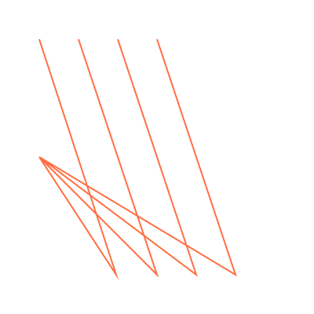
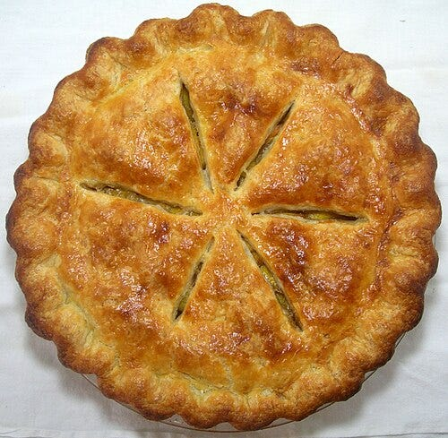
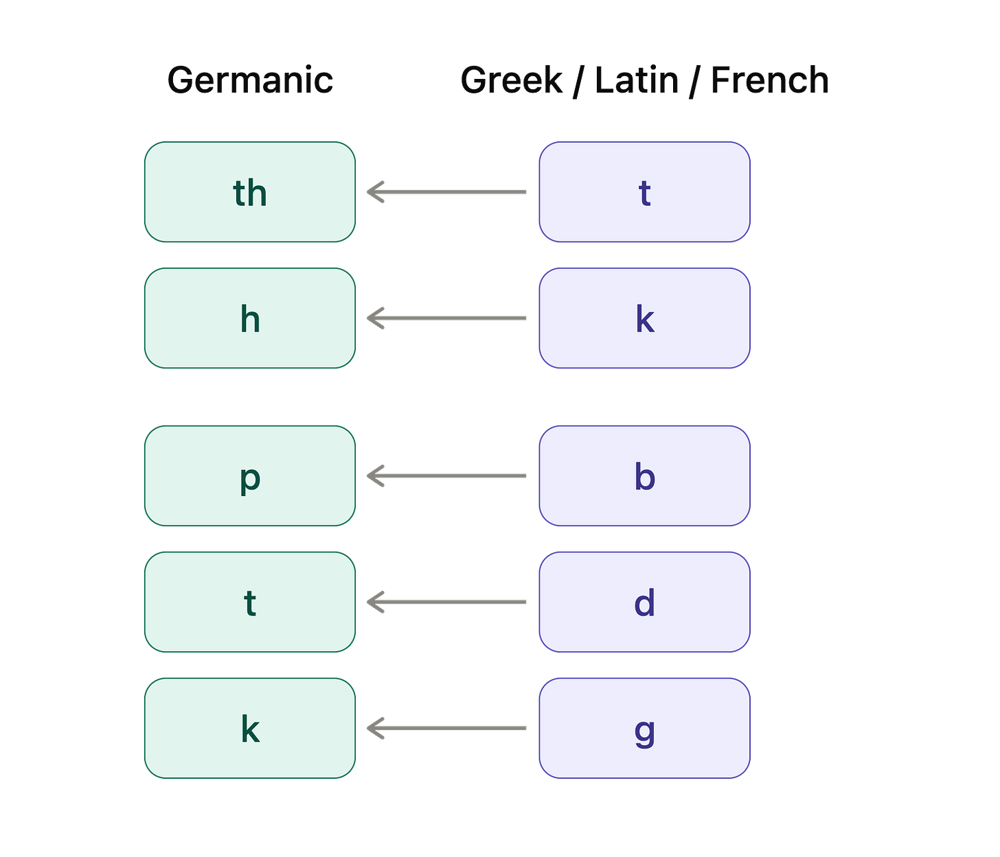

English Easter Eggs
July 2026

Linguistics is one of the best things to be obsessed with.1 Seriously, think about it: you’ve done decades of full-time immersive fieldwork on at least one language, and overachiever that you are, you’ve memorized your entire dataset, plus you have a native speaker on call to badger anytime you want. Next time you’re struggling to fall asleep, try flipping through your dataset and looking for patterns.
You’ll first spot them on some easy examples. “Heal” + “th” = “health” and “true” + “th” = “truth.” Oh, so “th” must have been something you used to be able to add to an adjective or verb to derive a related noun. Then you search for more “-th” words—okay, “strength” is obviously “strong” + “th”, just as “death” is “die” + “th”—so apparently the vowels sometimes get a bit beaten up. Once you’ve noticed that, you can puzzle out some of the trickier cases. What’s up with “birth”? Oh, it’s from “bear” + “th”, giving birth is bearing a child. And mirth is the state of being merry, while something is dear when there’s a dearth of it. Filth is a bunch of foul things, while a broth is what’s been brewed. And so on and so on.2
Every language has stuff like this. But, much like poetry, these patterns are most viscerally appreciated in a language that you know very well, so I’ll be sharing my favorites in English today. I’ve tried to pick patterns that are subtle, where you could speak English your whole life without noticing, but once you notice them, you start seeing them everywhere.
This is a pitch, but also a spoiler warning. I think that these patterns are in principle discoverable via the late-night noodling method,3 without any extra linguistic background, although I’d be super impressed if you got all of them.
I’m going to start with the biggest and the best: Grimm’s Law. Grimm’s Law was published by early linguist and collector-of-disturbing-bedtime-stories Jacob Grimm, who noticed that there’s a system of regular correspondences between consonants in German (and other Germanic languages including Dutch and English) and consonants in Greek and Latin.
English is a great language for seeing Grimm’s Law because English is a Germanic language with lots of Germanic words, but it’s heavily borrowed from other languages. Most English vocabulary is Latinate, either directly borrowed from Latin or borrowed from French (which is a daughter language of Latin).
Let’s compare some Germanic and Latinate words in English with similar meanings.
- “Flat” is Germanic, and “plateau” is from French
- “Full” is Germanic, and “plenty” is from French
- “Few” is Germanic, and “paucity” is from Latin
- “Foot” is Germanic, and “pedestrian” is from Latin and “podiatrist” is from Greek
I could go on,4 but you probably get the idea.
So Germanic words tend to mirror Latin-, French-, and Greek-derived words with similar meanings. They often have a similar sequence of consonants,5 except that “f”s in Germanic words mirror “p”s in the non-Germanic words.
Why does this happen? Well, as you might know, English, French, German, Greek, and Latin, along with most of the languages of Europe and many of the languages of India and West Asia, were all related, descended from a language called proto-Indo-European or PIE.

The words in these languages often subtly resemble each other because they are descended from the same word in PIE. But over the centuries, sounds in languages tend to shift, and the daughter languages of PIE all experienced slightly different sets of sound changes. The sound that was once “p” changed to an “f” in proto-Germanic and all the “p”-containing proto-Germanic words shifted away from their cousins in Latin and Greek.
Words like “foot” and “pedestrian” came from the same original PIE word but took very different paths from there into modern English.6 We call pairs like these doublets. Much of the fun of lexical navel-gazing is sussing out well-disguised doublets.
“f” ⇔ “p” is just the tip of the iceberg. There’s actually a whole family of consonant changes. Listing the Germanic version and then the Greek/Latin/French version:

Once you see it, you can’t unsee it. Germanic heart comes from the same root as Greek-derived cardiac, because the k>h sound and d>t. Germanic tooth comes from the same word as French-derived dental or Greek-derived orthodontist (t>th, d>t). Germanic father mirrors Latinate paternal (p>f, t>th).7 Germanic corn, know, and knee are kin/cognates of Latinate grain, agnostic, and genuflect.
And, yes, Greek-derived cannabis and Germanic hemp both came from the same root.8
This same basic process happens all the time. English and another language both start out with two versions of the same word. Maybe we loaned it to them, or they loaned it to us, or we both got it from a common ancestor. Then we have a sound change, and our version of the word gets a little warped, we (re)borrow the other language’s version, and now we have two versions of the word” one with the sound change, one without.
For instance, early English had a sound change where the “sk” consonant cluster turned into “sh” sound. We borrowed words from our neighbors who hadn’t had the sound change. So now we have two copies of some words, with closely related meanings: shirt/skirt, ship/skipper, bishop/episcopal, dish/disc, and the adjectival endings -ish/-esque.9
English has borrowed a whole lot from French—something like 30% of all our words. In some cases we’ve accidentally borrowed the same word twice, from different dialects of French spoken in different times or places.
For instance, French had a sound change around 1300-1500 where it dropped “s”es that came before consonants. We borrowed some words before the sound change—like feast, paste, and hostel—and we borrowed those same words again after the sound change—fête, pâté, and hotel. (Such words are easy to spot in writing because the vowel before the missing s gets a silly little hat in French and often in English too).
Anglo-Norman French was the variant of French spoken by the Norman invaders who brought the first big wave of French vocabulary to England in the 11th century. Anglo-Norman French was different from the mainstream Parisian form of French that later English-speaker grabbed words from. Where the Parisians started words with a “gu” sound, the Normans shortened this to just a “w” sound. We borrowed words like ward, warrantee, and reward from Anglo-Norman, and then later borrowed those words from Parisian French as guard, guarantee, and regard.
The Normans also pronounced some words with a hard “k” sound which the Parisians would soften to a “ch”. We got “cattle”, “catch”, and “castle” from the Normans, but “chattel”, “chase”, and “chateau” from the Parisians (notice that castle/chateau is also an example of “s” being dropped in later French!).
Enough about loanwords for now. Let’s talk morphology.
A suffix is productive if you can still use it to form new words---turquoisish, causeless, and Picassoesque. You probably have a good intuitive sense of what productive English suffixes mean, because you need to know that to invent and decipher new compound words.
Unproductive suffixes are less transparent. For instance, have you ever thought about what the “-le” is doing at the end of crackle, sniffle, and scribble?
It means that the action is happening repeatedly. Crackling is a series of cracks, scribbling is repeated scribing, and when you think you’re sniffling, my friend, you’re just sniffing over and over. There are a bunch of other words like this: suck > suckle, wrest > wrestle, daze > dazzle, grab > grapple, game > gamble, nose > nuzzle, and roam > ramble.
Another old suffix in English is the pejorative suffix -ard. You pair -ard with a verb or adjective to get a word for someone who does that verb or embodies that adjective, but like in a bad way. For example, dull > dullard, drunk > drunkard, lag > laggard, and slug(gish) > sluggard.10
Another fun morphological pattern is ablaut, where a vowel in a word changes but the surrounding consonants stay the same. The most obvious example is in the conjugation of irregular English verbs (today I run, but yesterday I ran), or in irregular plurals (one foot, but two feet). But there are some subtler examples.
For instance, English has a couple pairs of verbs that differ only on an internal vowel. One of the verbs means “to do X”. The other means “to cause something else to do X”, which is called the causative form. For example, a tree falls, but a logger fells a tree—causes the tree to fall. You lie (or sit or rise) yourself, but you lay (or set or raise) an object. A fish bites because a fisherman baits.
Back in proto-Germanic, there was a suffix that sounded something like “-yana”, which could get added to a verb to form a causative. Over time, the presence of the suffix changed how people pronounced the vowel in the previous syllable.11 More time passed and the suffix dropped off.
(This, by the way, is basically the process by which irregular English verb conjugations and irregular English plurals formed, and that’s one reason that the causative form of the verb often resembles the past tense).
There’s another bundle of English words that also do something funky with internal vowels: words like click-clack, tick-tock, ding-dong, wishy-washy, and jibber-jabber. Spot the pattern? The first word in the pair is “i” and the second word is either “a” or “o” (or, when we occasionally get all three, they always go i-a-o, e.g., tic-tac-toe, bingo-bango-bongo).
Those are my favorite Easter eggs in English. For each of these patterns, there are more examples that I didn’t name, sometimes many many more. And I’m sure there are more patterns that I haven’t yet found.12 Happy hunting!
Footnotes
- You might think I think this about all the things I’m obsessed with, but actually I’m extremely objective about the relative merit of my obsessions. Parasite lifecycles are a bad obsession because like 20% of your friends will freak out as soon as you even mention animals living inside other animals. Historical famines bums people out, and if you pivot to preindustrial grain storage to cheer them up, then they just wander. And I’ve never figured out how to explain to people why they should care about 20th-century death records from one specific town in Utah (”This guy died from miner’s consumption at age thirty-nine and was buried by a Lutheran church, but this guy died of diphtheria at age twenty-one and was buried by Catholics. Wait, come back! I haven’t told you about the three siblings who died of scarlet fever in the same week. Don’t you want to know where they were buried?”). Subscribe to Stamp Collecting to learn
where those three siblings who died of scarlet fever in one week in the 1920s were buriedtotally different facts that are not somehow both boring and depressing, I swear. ↩ - “Ruth”—which survives in ruthless—came from the verb “rue” (to regret). A ruthless person has no regrets ↩
- In the morning, you might want to check your work on Wiktionary or etymonline. ↩
- fee/pecuniary, five/pentagon, fire/pyre,… ↩
- And sometime similar vowels, although vowels are squishier and change faster, so this is less common. ↩
- It probably sounded something like “ped.” ↩
- And the f and th in feather match up to the p and t in pterodactyl and helicopter. ↩
- As far as I can tell, proto-Indo-European didn’t actually have a word for marijuana. Instead, the word for cannabis got loaned into proto-Germanic at a very early stage, before the Grimm’s Law took effect. ↩
- The Slavic suffix -ski is also related to -ish/-esque. ↩
- Bastard, coward, buzzard, and dastard(ly) all also come from the same roots. ↩
- I don’t have a great mechanistic understanding of why this happens, but it definitely is a thing that sometimes happens periodically in languages. Think about the English words “woman” and “women.” Originally, the first syllable was pronounced the same in both and the second syllable was pronounced differently; the spelling still reflects that. But today, the first syllables are pronounced differently and the second syllables are pronounced the same. ↩
- Tell me in the comments! ↩